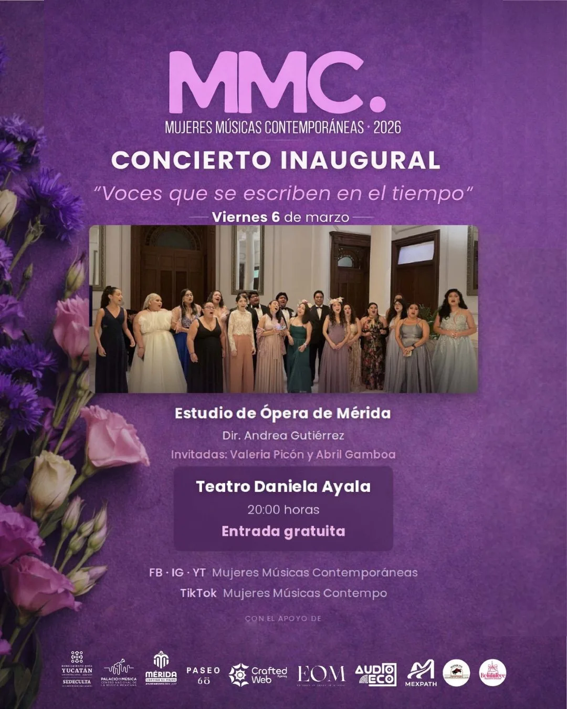
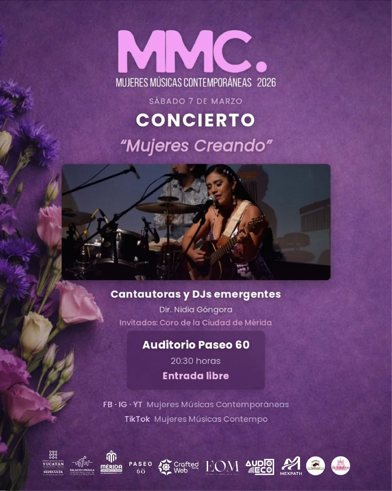
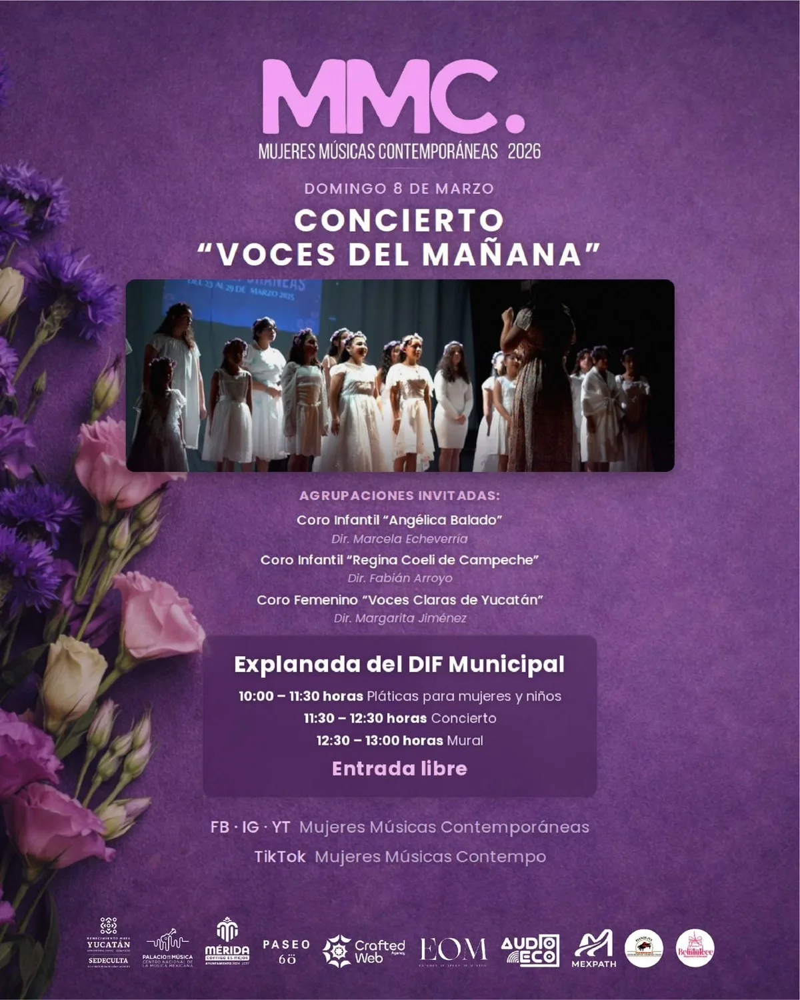
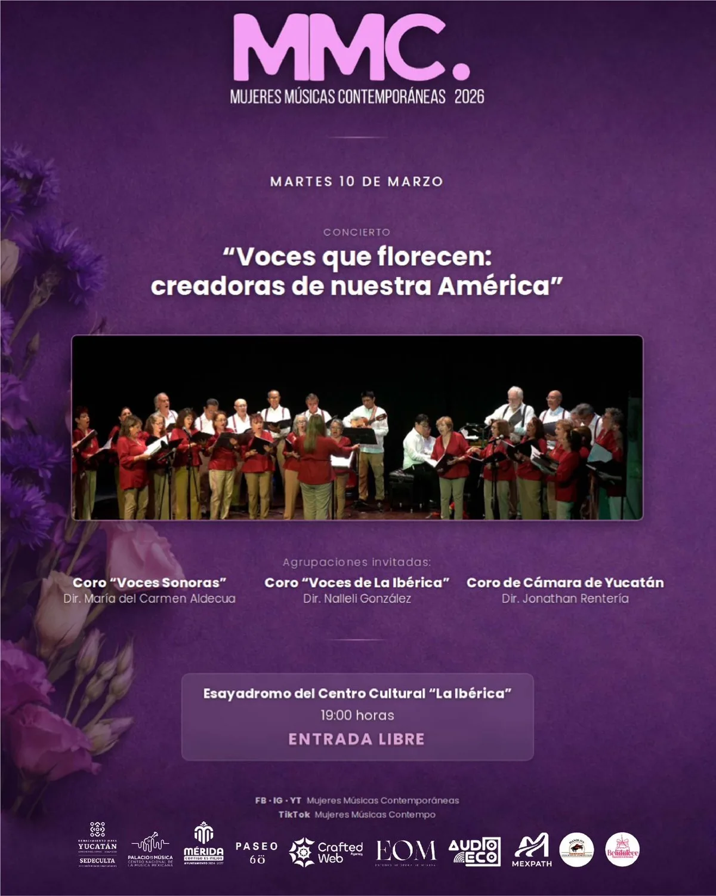
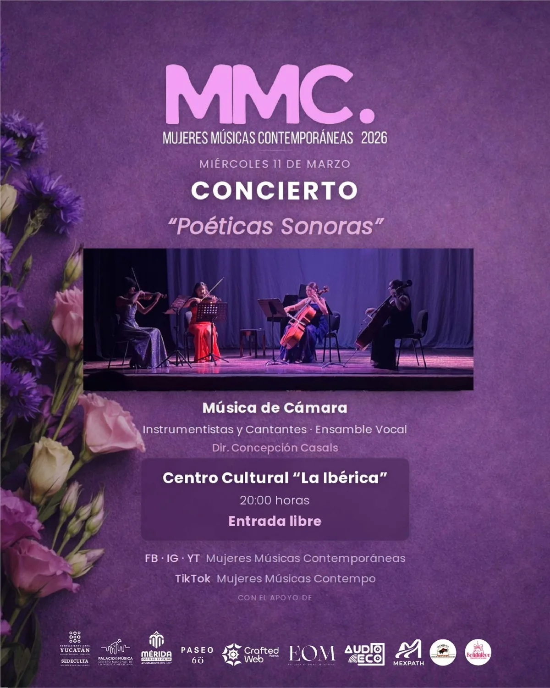
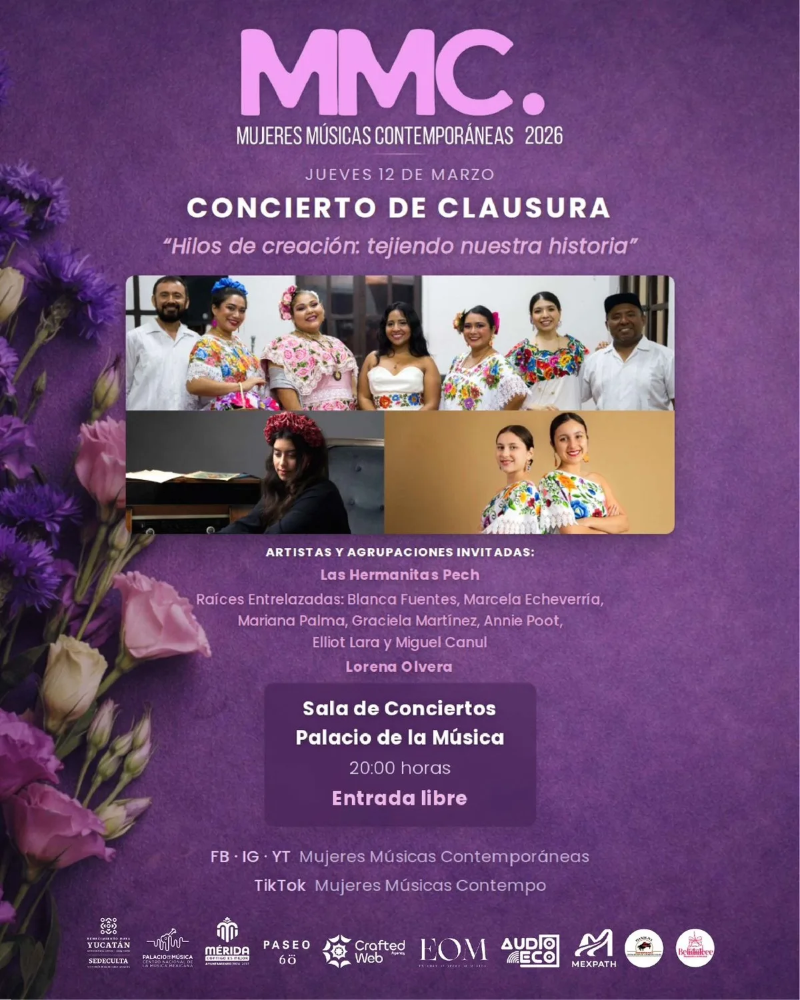
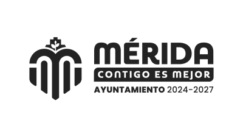
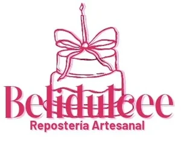

Todos los conciertos son de entrada libre — porque la cultura no debe tener barreras.






El Festival Mujeres Músicas Contemporáneas reúne a compositoras, intérpretes, directoras y creadoras sonoras para amplificar las voces de las mujeres en la música contemporánea.
Desde Mérida, Yucatán, celebramos la diversidad de expresiones creadas y lideradas por mujeres — de la ópera y la música de cámara a la canción de autor y el DJ set. En MMC 2026, el futuro se escribe con todas las voces.
Crear un ecosistema musical inclusivo donde las mujeres no solo participan — lideran, dirigen y transforman.


